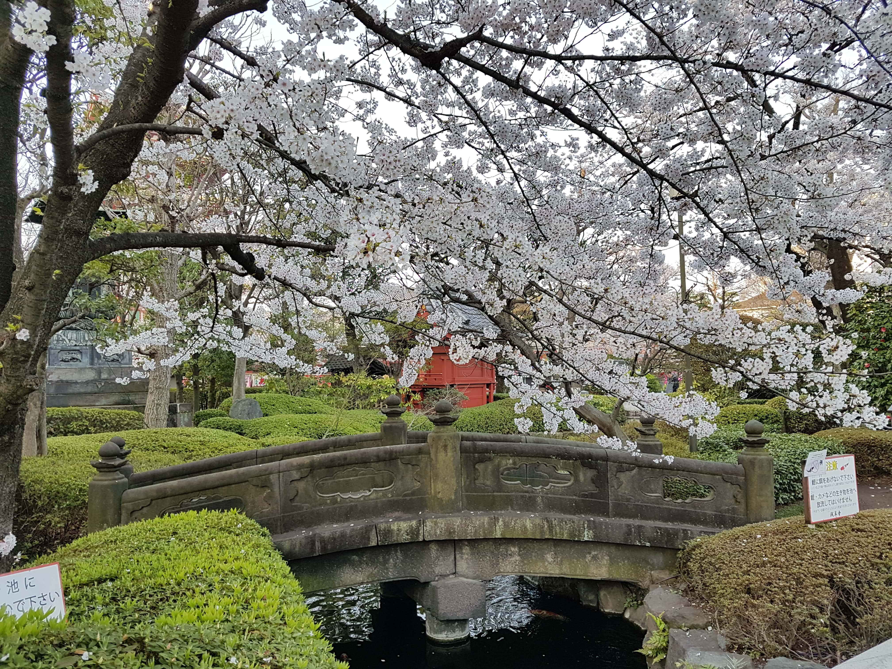

Bio
I am Matthew, a computing science at Ulster University. I have my own name on Google, called saxzphone and I have a soundcloud and youtube channel. I have a GitHub account were I have my upcoming projects. I am a 24 year old man from Donegal, who grew up with a farming background. My family are all sciencists, one a farmer, one a psychologist and my brother a physicist. I decided to study computing science through my passion for programming and solving complex problems from a young age. I studied catering, so I could learn vital skills to help me acheive my dreams.
Some of interests I am very interested in
- Singing
- Saxophone
- Cooking
- Walking
- Dancing
- Drawing
I have created an album
My albumMy cookery journey
I have been cooking since I was four year of age. My dream as a young child was always to setup a restaurant. I started my cookery journey by doing cookery classes at school and loved every minute of it. After finishing school I was not sure what I wanted to do, as I had so many interests. I decided to study Engineering and really enjoyed it. Then I realised this was not for me and moved to study catering. I really enjoyed my time as a chef in a student bistro and cooked, while learning skills and techniques to cook for paying customers. I was in one day a week cooking and later on, was in class doing tests and learning to new ways of cooking. I started working part time at a food truck serving restaurant quality food from a street food truck. I helped out during service and helped at a Christmas market. I learned some very valuable experiences from working outside and how businesses can make a living outdoors.
I later discovered a job opportunity at my local bakery and asked to do some work experiences. It later became an apprenticeship and I worked there for over 2 years as a baker and cleaner and learned some very valuable skills. I stopped being a baker because my back pain was getting worse and was have an effect on my mental health. I decided to leave catering and went back to study Engineering and then decided to do an BTEC in IT and was awarded full marks.
Singing
I have been singing since I was born, I do not have any examples.
- Big Belfast choir since January 2020
- Sang is different choirs
- Performed in jazz festivals
- Create sound art
- Spent a year doing singing lessons
- I was trained classically
Saxphone
I have been playing saxophone for 14 years and I play the alto saxophone. At the start of musically journey, I started to play cello at the age of ten. After a year playing the cello, I decided to play saxophone, as it was ones of my loves through my life. I have been awarded at Merit in Grade 8 Jazz saxophone and I continue to playing until today. I have played in theatres, jazz festivals and used to play in a jazz big band.
My Japan trip
I went to Japan and explored some amazing places and cities. I explored Tokyo, Kyoto, Osaka and Nara for two weeks during the cherry blosson season.
